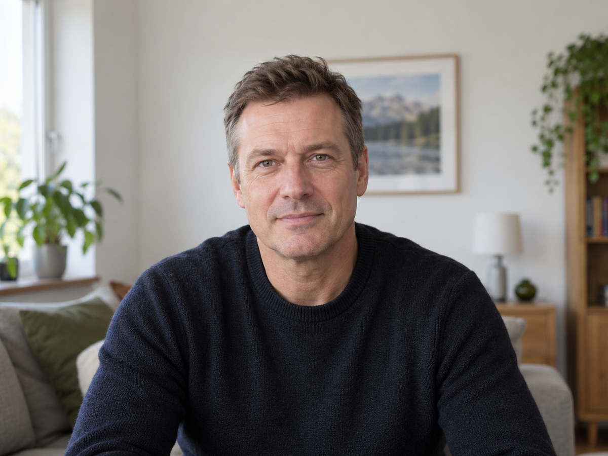
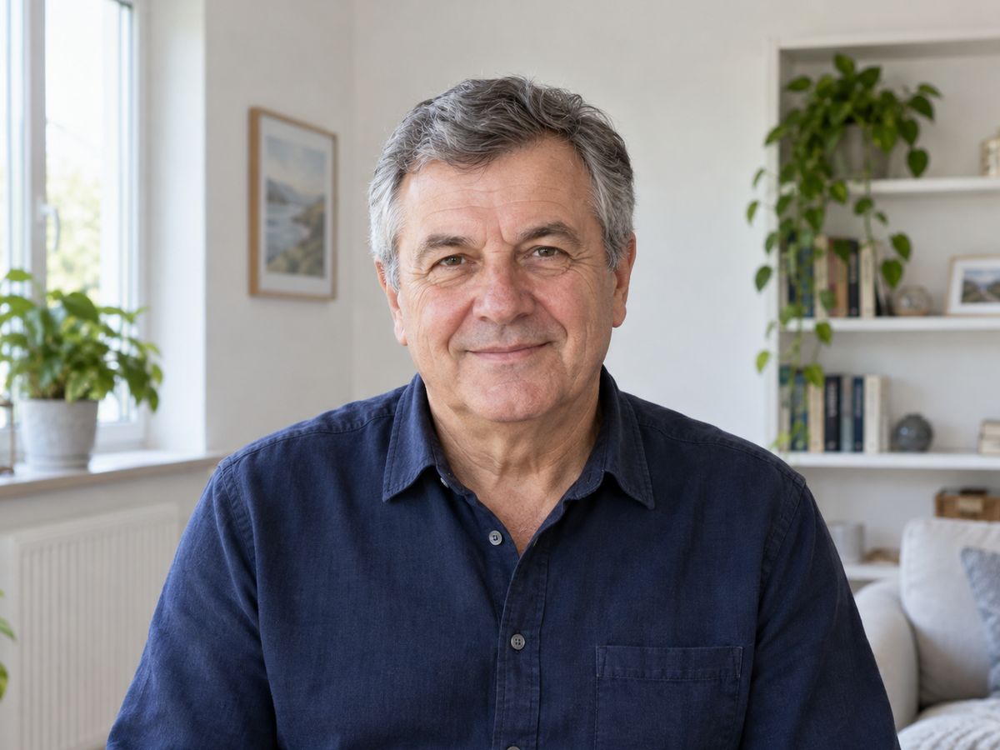
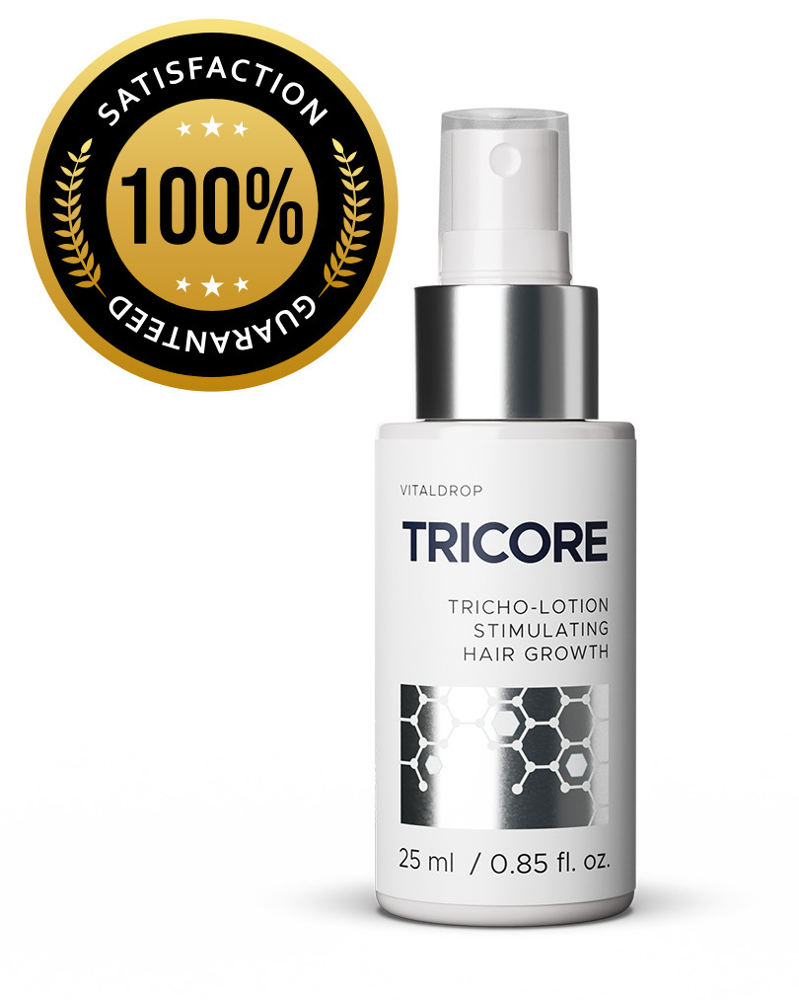

Nasze forum zalała fala zdjęć prezentujących szokujące metamorfozy. Czytelnicy pokazują swoje zdjęcia kuracji naturalnym preparatem na intensywny porost włosów.
Kobiety, które wcześniej narzekały na rzadkie włosy z widocznymi prześwitami, już po 28 dniach cieszą się burzą włosów na głowie. Z kolei mężczyźni, którzy byli „łysi jak kolano” od lat, dziś chwalą się obfitą czupryną. Aż trudno uwierzyć, że zdjęcia nie przedstawiają po prostu ludzi w perukach.
Efekt jest jednak naturalny i… zdecydowanie ładniejszy. A najlepsze jest to, że kosztuje zaledwie 3% sumy, jaką trzeba wydać na przeszczep włosów. Skąd tak wysoka skuteczność kuracji i zdumiewająco szybkie efekty? Gdzie dostać oryginalny preparat? Dowiedz się, czytając artykuł.
To rewolucja trychologiczna – zabiegi zagęszczania i przeszczepu włosów przestają być potrzebne
Nowy preparat na intensywny porost włosów szybko zyskał popularność w całej Europie. To dlatego, że przywraca gęstą fryzurę absolutnie każdemu – niezależnie od przyczyn rzadkich włosów lub łysienia. Stosowanie nie ma efektów ubocznych, bo preparat ma naturalny skład. Co więcej, efekty są trwałe i nie mijają zaraz po zakończeniu stosowania.
OTO KILKA OPINII OSÓB, KTÓRE JUŻ PRZESZŁY TĘ KURACJĘ:
„Koniec kompleksów…”
Anna wyznaje, że wcześniej nie lubiła patrzeć w lustro:
Przez całe życie miałam dosłownie 3 włosy na krzyż – taki puszek jak u niemowlęcia. Strasznie się tego wstydziłam. Na doczepy ze sztucznych włosów nie było mnie stać…
Jej samoocena podskoczyła mocno w górę po zastosowaniu kuracji:
Teraz czuję się piękna, a do tego dumna, że mam sprytny sposób na naturalnie gęste włosy – bez jakichś tam sztucznych doczepów. Wszyscy prawią mi komplementy.**Wyniki mogą się różnić ze względu na indywidualne cechy organizmu
„Odwołałem przeszczep!”
Marek cieszy się, że łysina już go nie postarza:
Przez łysienie androgenowe straciłem niemal wszystkie włosy. Strasznie mnie to postarzało, więc w końcu załatwiłem sobie operację przeszczepu włosów. W Turcji, bo tam taniej.
A tu proszę. Dzięki tej kuracji włosy odrosły mi na tej łysinie, a wystarczył miesiąc. Odwołałem przeszczep i 3 tysiące euro (czyli 13 tysięcy złotych) zostało w mojej kieszeni. Szczerze? Jestem w szoku, że ta kuracja jest taka niedroga, skoro daje efekty lepsze niż przeszczep**Wyniki mogą się różnić ze względu na indywidualne cechy organizmu .

„Piękne włosy to teraz moja wizytówka”
Nadmiernie wypadające włosy wprowadziły Paulinę niemal w depresję:
Przez ponad 5 lat co chwila farbowałam i prostowałam włosy. Do mam bardzo stresującą pracę. Nic więc dziwnego, że włosy wypadały mi w nadmiarze. Ale po ciąży to już była prawdziwa tragedia. Zaczęły wychodzić całymi garściami! Straciłam ponad połowę włosów i byłam zrozpaczona…
Dzisiaj Paulina cieszy się fryzurą gęstszą niż kiedykolwiek:
Gdyby ta kuracja tylko zatrzymała wypadanie włosów, to by mi wystarczyło do szczęścia. A nie dość, że włosy przestały wypadać, to jeszcze są gęste, grube i mocne. Formuła przepięknie pachnie i jest prosta w stosowaniu. Jestem zachwycona!** Wyniki mogą się różnić ze względu na indywidualne cechy organizmu
„Ratunek na łysienie plackowate”
Ireneusz cierpiał na ciężkie łysienie plackowate:
Maści sterydowe, leki immunosupresyjne, fototerapia, suplementy – stosowałem już wszystko na moje łysienie. Żadnego to nie dało efektu. Już miałem się golić na zero.
Kuracja szybko przywróciła mu atrakcyjny wygląd:
Nie mogłem uwierzyć, jak już 3. dnia zobaczyłem odrastające włosy na tych łysych plackach. To działa dokładnie tak, jak opisują. Spójrzcie tylko na zdjęcia.**Wyniki mogą się różnić ze względu na indywidualne cechy organizmu

„Mam fryzurę jak z marzeń!”
Ola od miesięcy zbierała fundusze na zabieg doczepiania sztucznych włosów:
Zazdrościłam koleżankom, jak robiły sobie fajne fryzury na imprezy. Ja co najwyżej mogłam związać włosy w marną kitkę. Zaczęłam oszczędzać na zagęszczanie włosów sztucznymi doczepami, ale to aż ponad 2500 zł kosztuje…
Ta metoda spełniła moje marzenia. Wystarczyło masować skórę głowy tym preparatem i włosy zaczęły mi rosnąć jak szalone! Wyglądam zjawiskowo z nową fryzurą, a oszczędzone pieniądze wydam na zagraniczne wakacje, zamiast na doczepianie sztucznych włosów! Super!**Wyniki mogą się różnić ze względu na indywidualne cechy organizmu
Tego odkrycia dokonał Polak
Kuracją, która gwarantuje tak radykalny porost włosów, jest bioaktywator keratynowy wynaleziony przez prof. Wojciecha Czmielewskiego – specjalistę ds. trychologii cenionego w całej Europie.
Bioaktywator keratynowy stymuluje włosy aż na 6 poziomach (wzrost, grubość, gęstość, długość, wzmocnienie, ochrona). To prawdziwy przełom w dziedzinie trychologii! A najlepsze, że każdy w Polsce może z niego skorzystać, by raz na zawsze zapomnieć o wypadaniu włosów, zakolach i łysinie.
Bioaktywator keratynowy prof. Czmielewskiego został przebadany przez 7 laboratoriów na całym świecie. W testach brało udział ponad 60 000 kobiet i mężczyzn. Wszystkie badania potwierdziły ponad wszelką wątpliwość, że kuracja:
- zwalcza wszystkie typy łysienia raz na zawsze (anagenowe, androgenowe, bliznowaciejące, plackowate, telogenowe)
- przywraca do życia uśpione oraz martwe mieszki włosowe już po około 2 dniach stosowania, nowe i mocne włosy zaczynają rosnąć nawet w miejscach wieloletnich przerzedzeń, zakoli czy łysiny (żaden podobny produkt dostępny na rynku nie posiada tej właściwości)
- ekstremalnie przyspiesza porost włosów – po 28 dniach naturalne włosy wyglądają jak po przeszczepie, miejsca nieowłosione zapełniają się nowymi włosami
- pogrubia każdy pojedynczy włos – tym samym wizualnie jeszcze bardziej zwiększa objętość fryzury
- zagęszcza włosy – dzięki czemu nawet najrzadsze i najcieńsze włosy zamienia w bujna czuprynę
- radykalnie zapobiega wypadaniu włosów – mocno zakotwicza włosy w cebulkach zapobiegając ich utracie, ponadto wydłuża cykl życia włosa o około 300%
- intensywnie wzmacnia i odżywia strukturę włosów – włosy są zdrowe, lśniące oraz odporne na wypadanie, łamanie, rozdwajanie, uszkodzenia mechaniczne, uszkodzenia termiczne i promienie UV
- jest skuteczna u każdego– zarówno u kobiet jak i mężczyzn w każdym wieku, niezależnie od przyczyn utraty włosów (geny, hormony, choroby skóry, zaburzenia metaboliczne lub krążenia, stres, zła dieta lub pielęgnacja, czynniki środowiskowe czy uszkodzenia mechaniczne)
Nagrody sypią się jedna po drugiej
Można śmiało stwierdzić, że nasz rodak rozsławia Polskę na cały świat. Za wynalezienie bioaktywatora keratynowego otrzymał już kilkanaście nagród branży beauty, w tym Best Cosmetological Discovery of the Year. W branży kosmetologicznej ta nagroda jest tak prestiżowa jak Nagroda Nobla!
Trwa promocja – duży rabat dla wszystkich Polaków
Panu prof. Wojciechowi Czmielewskiemu serdecznie gratulujemy sukcesu naukowego i życzymy powodzenia w dalszej pracy.
Z kolei Wam, Drodzy Czytelnicy, podajemy link do oficjalnej strony prof. Czmielewskiego. Tam sam pan profesor szczegółowo opisuje działanie wynalezionej przez siebie kuracji na intensywny porost włosów. Na tej stronie możecie też zamówić kurację bioaktywatorem keratynowym w świetnej promocji za 89zł. Promocyjna obniżka ceny trwa do końca dnia .
Złóż zamówienie
Cena: 199 zł89 zł
darmowa dostawa

KOMENTARZE (139 komentarzy)
Ernest dzisiaj
a czy mozna uzywac ten produkt jak sie jest po transplantacji wlosow i przeszczep się niestety nie przyjal ? bo ja wlasnie mam taki problem ...
Lena Stankiewicz dzisiaj
@Ernest Tak, oczywiście, że można. Powodzenia w kuracji!
Justyna dzisiaj
Moja bratowa używała przed ślubem, nikt jej nie wierzył, że to naturalne włosy ma takie gęste i długie, nawet dała sprawdzić u nasady czy to nie są doczepiane w salonie. NO HIT rzeczywiście!! Zamowiolam wczoraj dziś ma być kurier, napisze jak moje efekty 😋
Michał dzisiaj
Bardzo WAM polecam tą kurację. Używam niecały tydzień, a widać już tysiące kropek z wlosow na tej mojej łysinie. Ale nie widziałem w aptekach ani sklepach, tylko na tej stronie można zamówić.
Bartosz dzisiaj
@Michał na której stronie to można zamówić?
Lena Stankiewicz dzisiaj
@Bartosz Kurację można zamówić na stronie, do której link podajemy na końcu artykułu 😊 Jak nie możesz znaleźć, daję Ci link również tutaj, klik >>
Olga dzisiaj
Jaaaaj, ale super. Właśnie szukałam ratunku dla moich włosów, bo bardzo mi się przerzedziły.
Iwona Wiecek dzisiaj
Ludzie, nie latajcie do żadnej Turcji na przeszczepy!!! nie dość że ładujecie kupe kasy psu w du*e, to jeszcze ryzykujecie że złapiecie jakiegoś syfa oni tam nie wiedzą co to higiena
maciej dzisiaj
@Iwona Wiecek ak masz dobrą klinikę to przestrzega higieny. Bardziej bym zwrócił uwagę na to że takie przeszczepy się często nie przyjmują po prostu. Wiec lepiej sprobowac we własnym domu, tanio i dobrze, z tą kuracją
Iwona Wiecek dzisiaj
@maciej No o tym mowie.
Bożena wczoraj
Od lat choruje ciężko i wlosy mi wypadly. Zamowie zobaczymy co to warte?
Emilia wczoraj
Ciężko mi było uwierzyć, że to robi takie cuda. Sprawdziłam na sobie, proszę przed i po różnica. Ten produkt po prostu wymiata !!
Ariel wczoraj
Sądziłem, że to kolejna nic nie warta wcierka. Ale faktycznie włosy odrastają! Jak ktoś ma problem z łysieniem, które w rodzinie jest dziedziczne, to szczerze polecam.
Patrycja wczoraj
Dooooobra, zamawiam , póki promocja 😋
Strona < 1/19 >